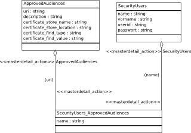
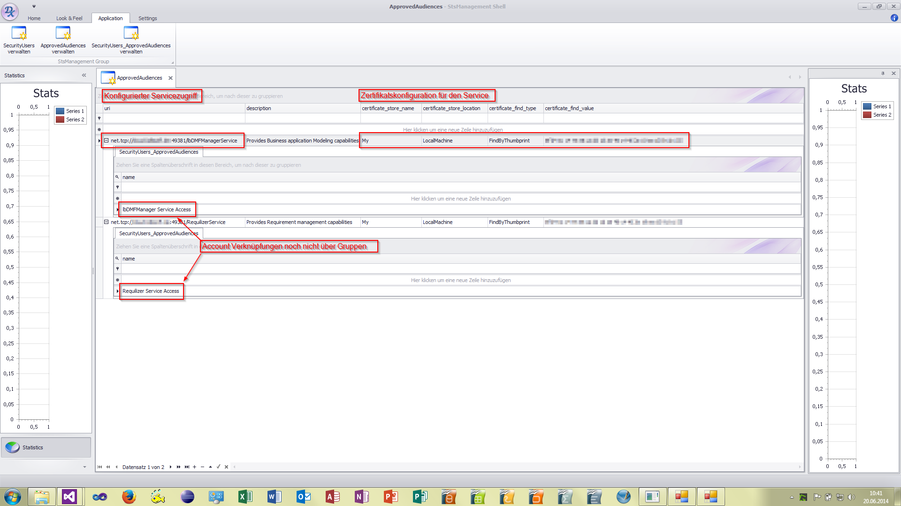

Haben Sie nicht auch eine Vorstellung von dem was Sie erreichen wollen?
Nur eine grobe Vorstellung von Ihrer Idee und keine Zeit für eine Aufwändige Entwicklung?
Schnell mal eine erste Lösung in Sicht? Nein, Sie programmieren alles noch von hand?

Das kann nicht sein, denn es gibt für alles eine Lösung!

Legen wir los. Ein einfacher Authentication Service entsteht in wenigen Schritten. Sie sehen ein UML Modell als Grundlage für die folgenden Anforderungen:

Anforderungen an das System:
Ein Service nutzer soll sich mittels eines zentralen Authentication Services anmelden können. Verschiedene Services sollen mit einem erstellten Token zugreifbar sein.
Ein Token ist ein Ersatz für eine Anmeldung an den eigentlichen Services. Diese sind nicht an den üblichen Benutzernamen mit einem Passwort interessiert, sondern an einem Token, das nach einer gewissen Zeit (5 Minuten) abläft.
Da der Service selbst schon in den Grundzügen entwickelt wurde, hatte dieser schon eine Tabelle, die für eine Anmeldung verwendet wurde. Eine Erweiterung um die restlichen Tabellen ist notwendig, aber es wird auch eine Anwendung benötigt, welche das Anlegen und Verwalten von Benutzern ermöglichen soll.
Der Prototyper konnte für diese Aufgabe herangezogen werden, denn dieser hat ja die Möglichkeit Code zu generieren um der Management Anwendung Leben einzuhauchen. Es war auch absicht, diese zuerst zu erstellen und nicht den Authentication Service manuell um die benötigten Tabellen zu erweitern.
Aus dem Generat der Management Anwendung konnten die restlichen Tabellen herauskopiert werden und in den Authentication Service integriert werden. Als dies gemacht war, konnte der verbleibende Code im Service umgebaut werden, sodass die Konfiguration nicht mehr aus der Konfigurationsdatei, sondern aus der Datenbank geladen werden kann.
Fazit:

Dies zeigt, dass zwar nicht alle Teile einer Anwendung Modelliert werden können, aber ein beträchtlicher Teil schon. Auch wenn der Authentication Service kein Kandidat für eine Modellgertiebene Software Entwicklung zu sein scheint, war hier ein Teil machbar, indem in der richtigen Reihenfolge gearbeitet wurde.
Weitere Bilder:

Hier sehen Sie die StsManagement Anwendung, wie Sie tatsächlich genannt wird und in einem entsprechendem UML Modell existiert:

Es sind Zertifikate für zwei Services registriert, die durch den STS Service für die eingerichteten Nutzer Accounts ferfügbar gemnacht wurden. Beide Anwendungen, der STS Service und die Stsmanagement Anwendung sind mittels eines Codegenerator Templates erstellt worden. Der Screenshot ist in einer FullHD Auflösung erstellt worden und kann dementsprechend vergrößert werden.
Weiter wird pro Anwendung der entsprechende Service generiert, auf den durch die Anwendung zugegriffen wird.